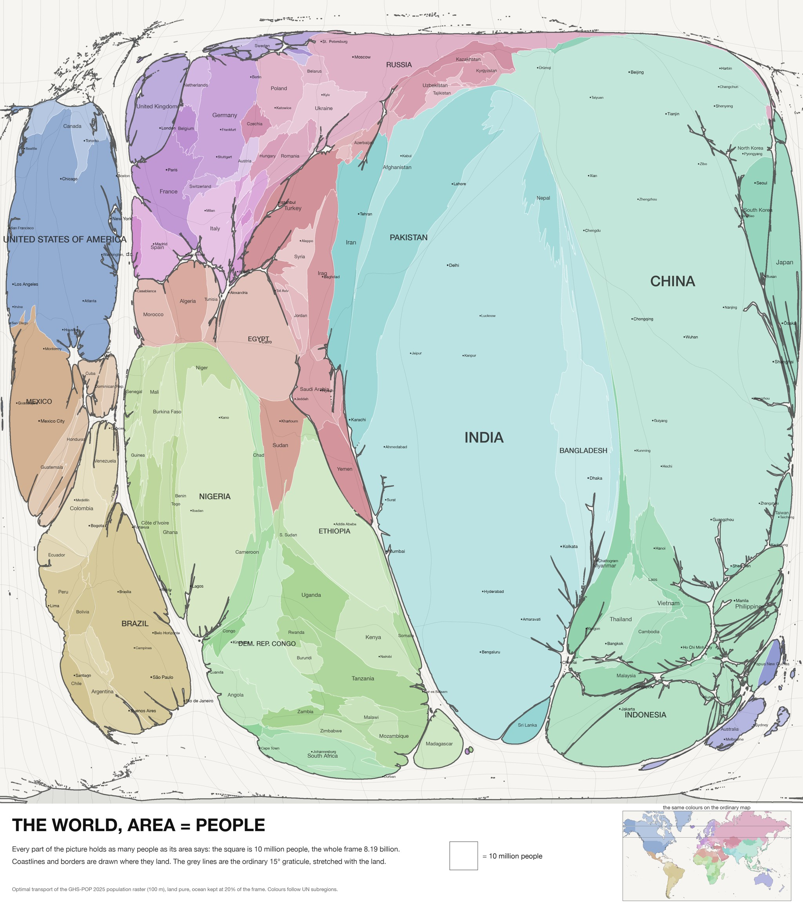
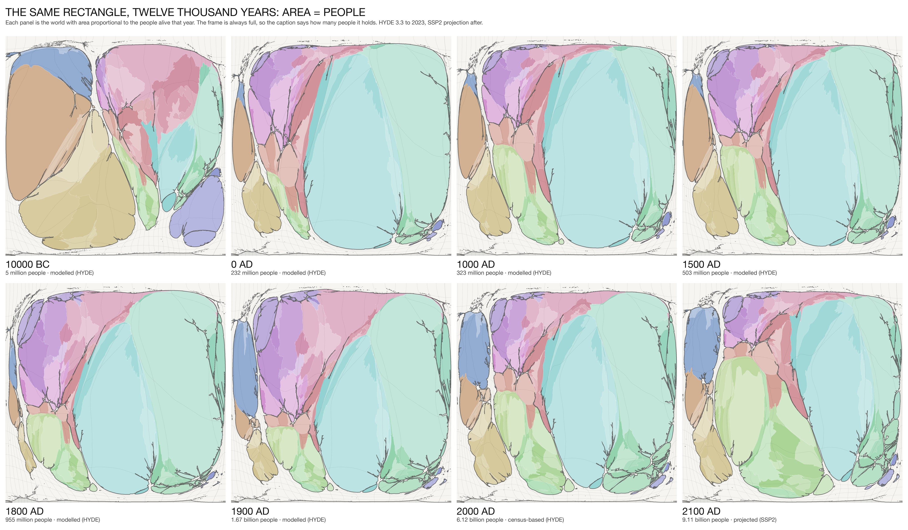
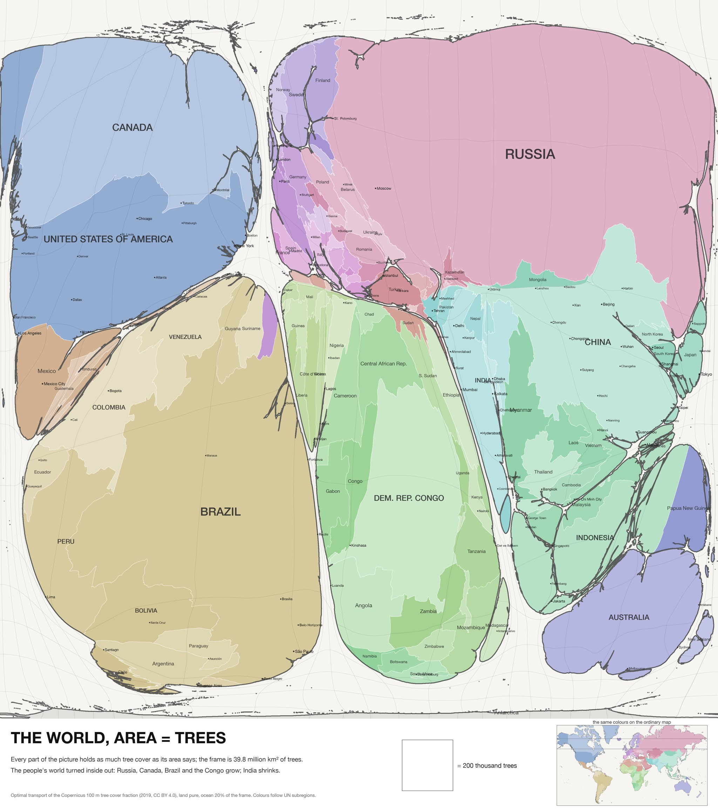

The humeter world
Maps whose area is people. The Mercator rectangle stretched by optimal transport so that ten million people always fill the same patch of paper, for today, across twelve thousand years, and for any measure you like. One humeter is a kilometre at the world's average density.

The mapZoom from countries to provinces and cities to districts; switch the base to population, night lights or terrain.

Time10,000 BC to 2100, 103 frames on one scrubber, with the handovers between sources declared.

The storyThe world today, the morph, the epochs, wealth against the years of human life, the non-human world.
Also: the globe · the earlier flat viewer · the earlier three.js globe · lenses · geometry · compare · every experiment · repository.